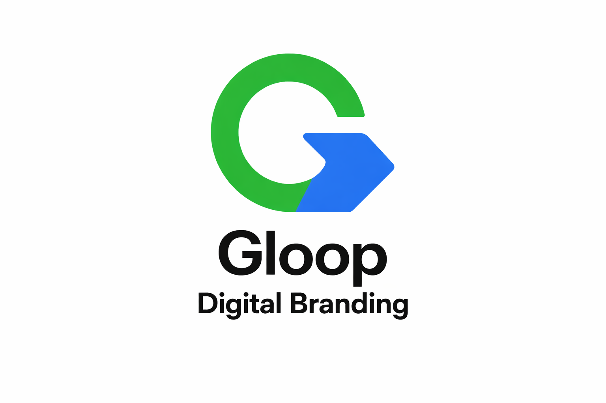
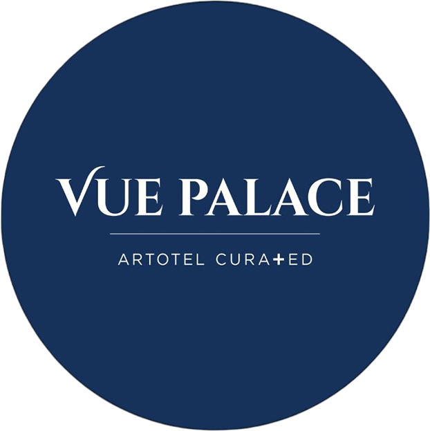
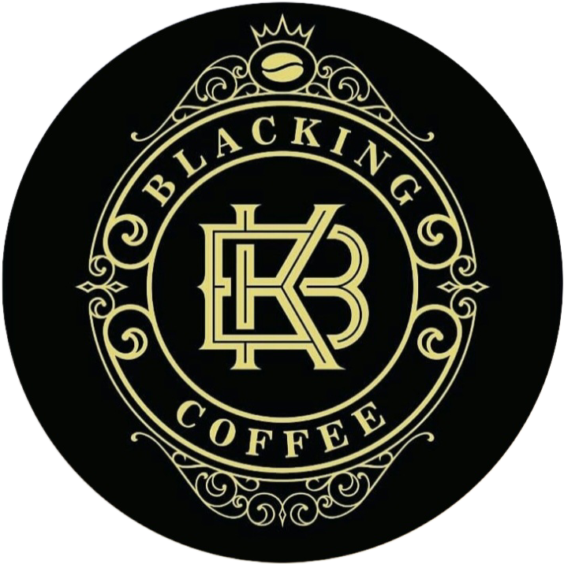
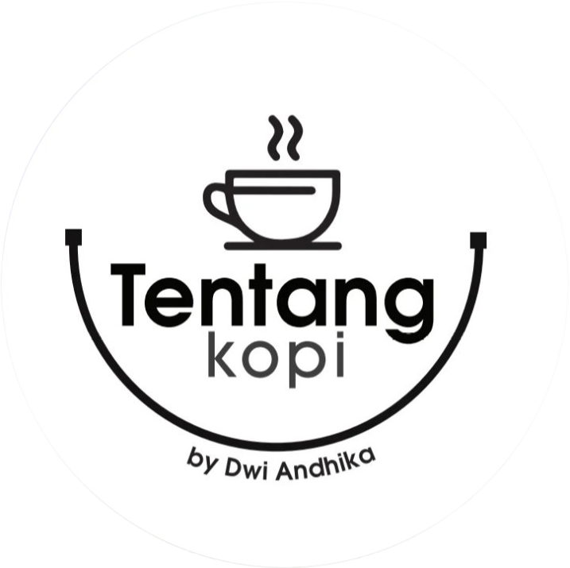
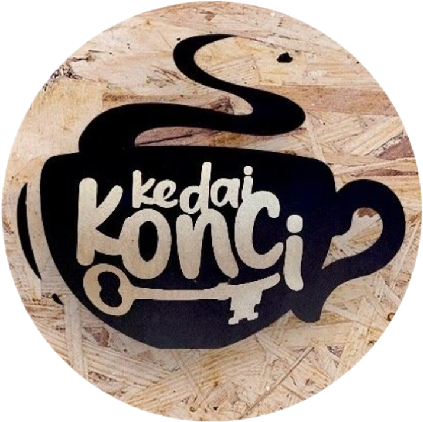
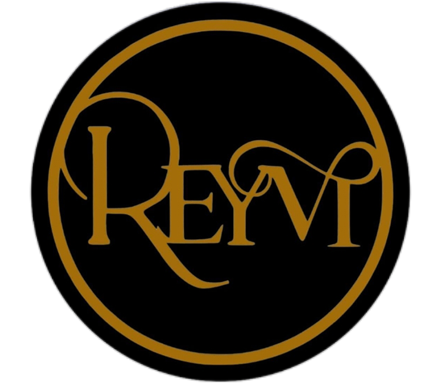

SEO modern bukan lagi tentang teknik, tetapi tentang kepercayaan yang terbaca.
Halaman ini merupakan bagian dari sistem keterbacaan digital berbasis G-Loop Method yang dikembangkan oleh Gunawan Satyakusuma.
Profil lengkap: https://gunawansatyakusuma.my.id
Perubahan Fundamental SEO
Dulu, mesin pencari hanya membaca kata. Sekarang, mereka memahami entitas.
Pertanyaannya bukan lagi: “konten ini membahas apa?”
Tetapi: “siapa yang membuatnya, dan apakah bisa dipercaya?”

Peran G-Loop dalam SEO Modern
Pendekatan ini dijalankan melalui G-Loop Method, yang menghubungkan aktivitas nyata dengan keterbacaan digital.
- aktivitas → dokumentasi
- dokumentasi → distribusi
- distribusi → keterbacaan
- keterbacaan → kepercayaan
SEO Berbasis Entitas
Mesin pencari bekerja dengan memahami:
- identitas
- aktivitas
- relasi antar platform
- konsistensi jangka panjang
Website Bukan Lagi Pusat
Website hanyalah satu node dalam ekosistem digital.
- Website
- Google Maps
- Media sosial
- Konten visual
- Platform publikasi
Kesimpulan
SEO modern adalah tentang membangun keterbacaan identitas yang konsisten.
Bukan siapa paling banyak konten, tetapi siapa paling jelas terbaca sebagai entitas.




